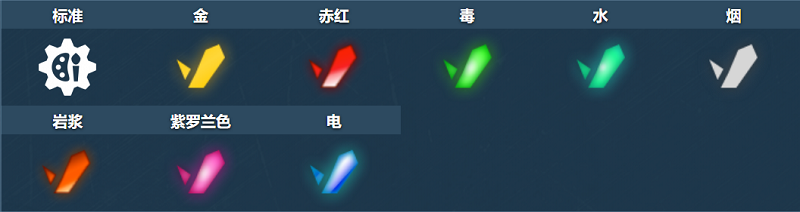

概括
中短程之间的边界，这个炮塔在中小型地图中都被证明是有效的。
火龙珠，因此得名，使用封装在负能量场中的弹丸，释放从表面反弹的不寻常能力。
两种基于等离子的武器中的第二种，离子炮是第一种，
这种武器的射速明显较慢，不能无限期使用，在消耗一定数量的炮弹后需要时间充电。
然而，与它的兄弟相比，火龙珠拥有更快的射弹、更大的射程以及从掩体背后间接攻击敌人的能力，
只要玩家能够准确瞄准。火龙珠在具有许多建筑物和其他垂直表面的地图中非常有效，可以最大限度地提高反弹潜力。
车库中的描述
短程炮塔。等离子射弹会弹射并伤害您视野之外的敌人。
具有有限的能量容量，随着时间的推移充电。
等离子枪“火龙珠”是西伯利亚顶级研究人员创造的一种新的秘密装置。
为了量产这个炮塔，一个由 22 名专家组成的团队，在未经允许的情况下，在地下掩体中连续工作了 3 年。
最终的结果非常独特。这种武器发射等离子射弹，涂有“智能”负场。
击中坦克时，弹丸会爆炸，但如果击中固体障碍物，弹丸会弹开并继续飞行。
这样，即使您看不到目标，也可以使用 Ricochet 击中目标。
不幸的是，不可能完全解决安全问题，等离子弹很容易反弹并击中最初发射它们的坦克。
“聪明”的负场很聪明，但不够聪明，无法区分敌方坦克和它的主人。
装备改造
防御模块
射击效果

皮肤

火龙珠标准
火龙珠 XT
火龙珠遗产